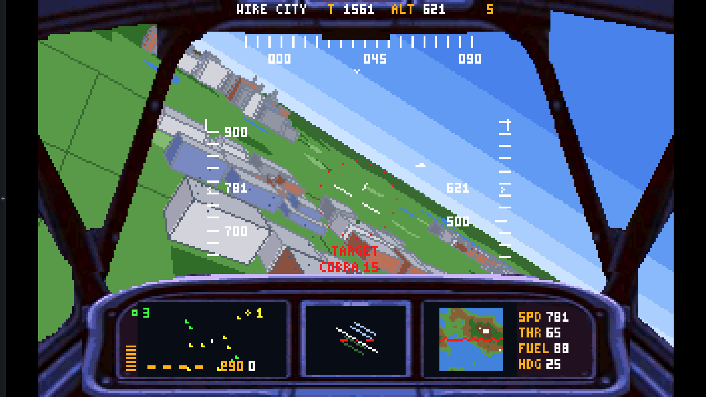
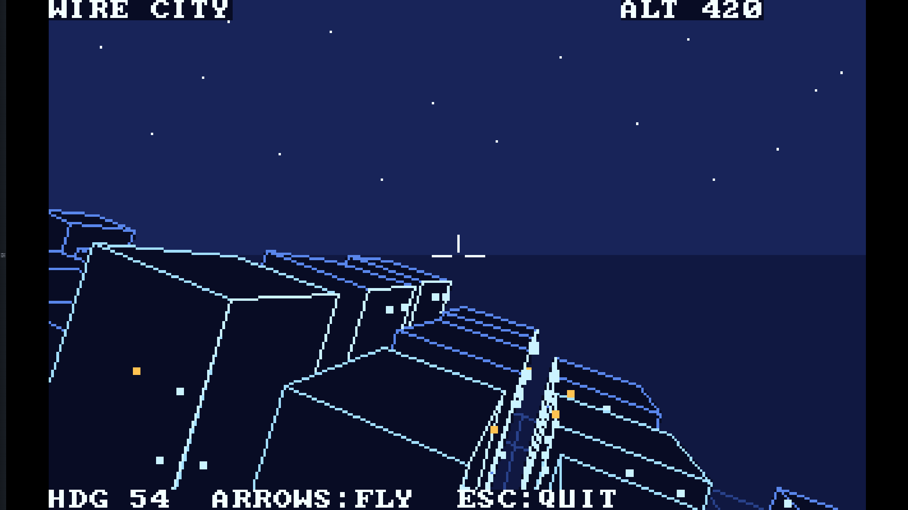
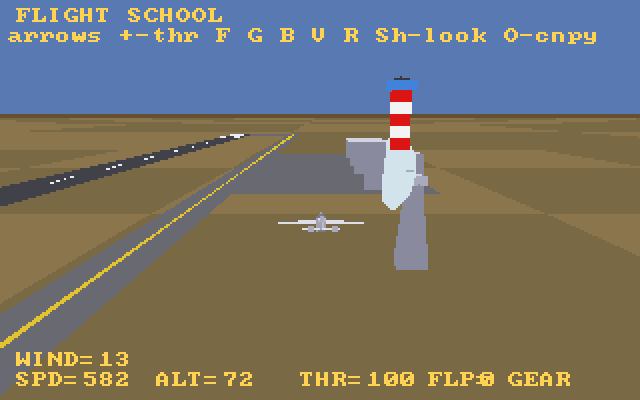
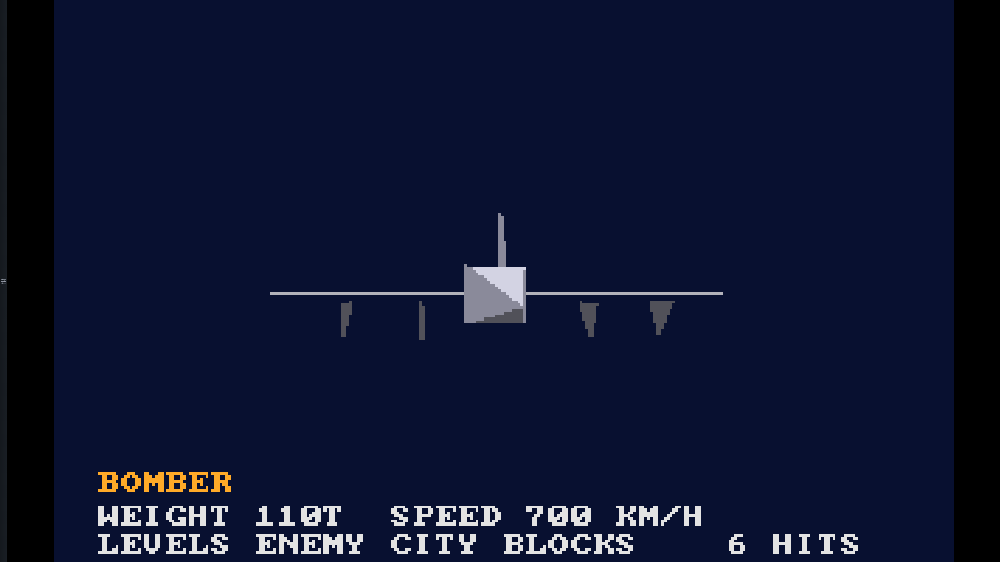
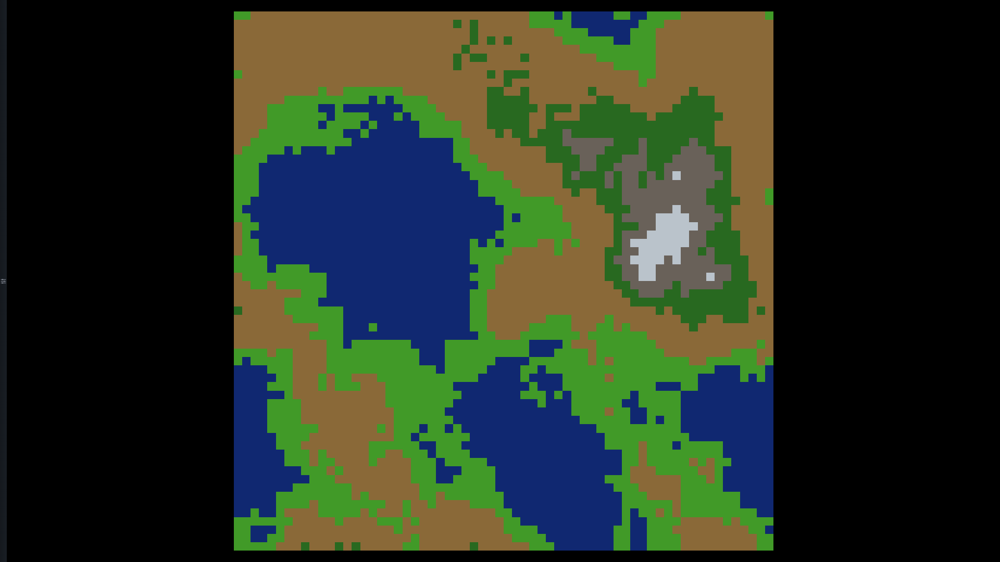

The combat flight simulator: a procedural island, a destructible city, two air forces of five aircraft types across a jagged front line, homing missiles, a photo cockpit with a working radar, and a real jet engine in one Sound Blaster channel. Fly, owl!

The 1986-style original that started it all: a wireframe night-flight over a procedural megacity. One source file, hidden lines by the painter's algorithm, banking turns. The ancestor.

Take off, fly the pattern, grease the landing. A real airfield - numbered runway, taxiway, hangars, a control tower in obstruction stripes, a spinning radar - and a flight model that knows VR, the stall and the ground cushion. Every 3-D model rides the Blender → OBJ → 8086 precompiler pipeline.

All five aircraft with ROM-font spec sheets. Up/Down to cycle, arrows to spin, Space blows one apart - and the painter's sort keeps ordering the debris.

Diamond-Square on a torus, seeded by the clock: any key mints a fresh island. The generator the games fly over - and the one that taught us two number-theory lessons.
A particle laboratory: fire ages into spinning polygonal smoke puffs under buoyancy, drag, vortex and turbulence. Physics and render run on separate clocks - W/S scales physics, [ ] sets the particle count, the readout shows both rates live. Orbit with the arrows, tune, discuss.